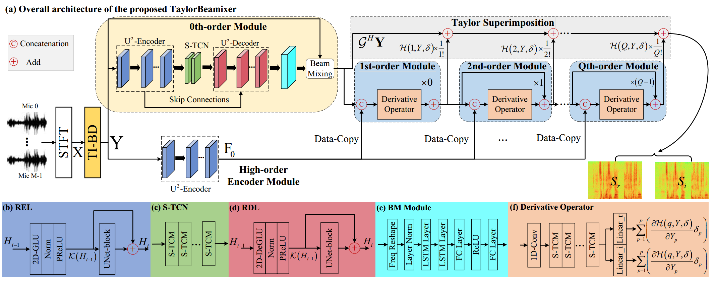
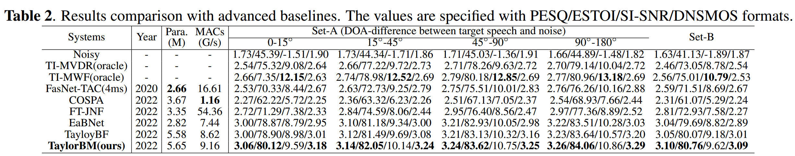

Abstract: Despite the promising performance of existing frame-wise all-neural beamformers in the
speech enhancement field, it remains unclear what the underlying mechanism exists. In this paper, we revisit
the beamforming behavior from the beam-space dictionary perspective and formulate it into the learning and
mixing of different beam-space components. Based on that, we propose an all-neural beamformer called TaylorBM
to simulate Taylor's series expansion operation in which the 0th-order term serves as a spatial filter to
conduct the beam mixing, and several high-order terms are tasked with residual noise cancellation for
post-processing. The whole system is devised to work in an end-to-end manner. Experiments are conducted
on the spatialized LibriSpeech corpus and results show that the proposed approach outperforms existing
advanced baselines in terms of evaluation metrics.
TaylorBM Architecture: 
Samples:
Noisy
Target
TI-MVDR(oracle)
TI-MWF(oracle)
FasNet-TAC(4ms)
COSPA
FT-JNF
EaBNet
TaylorBF
TaylorBM(Pro.)
Utterance 1 (SNR=-4dB, T60=387ms, target-doa=144°, target-dist=4.10m, inter1-doa=48°, inter1-dist=1.30m, inter2-doa=116°, inter2-dist=2.10m)
Utterance 2 (SNR=-2dB, T60=320ms, target-doa=182°, target-dist=3.30m, inter1-doa=218°, inter1-dist=4.10m, inter2-doa=237°, inter2-dist=1.10m, inter3-doa=1°, inter3-dist=2.90m)
Utterance 3 (SNR=-3dB, T60=278ms, target-doa=62°, target-dist=2.30m, inter1-doa=341°, inter1-dist=1.10m, inter2-doa=23°, inter2-dist=3.10m, inter3-doa=267°, inter3-dist=0.90m)
Utterance 4 (SNR=2dB, T60=895ms, target-doa=233°, target-dist=0.5m, inter1-doa=139°, inter1-dist=3.30m, inter2-doa=142°, inter2-dist=1.30m)
Utterance 5 (SNR=-3dB, T60=157ms, target-doa=105°, target-dist=1.70m, inter1-doa=119°, inter1-dist=0.70m)
Utterance 6 (SNR=4dB, T60=873ms, target-doa=251°, target-dist=1.70m, inter1-doa=184°, inter1-dist=1.90m)
Utterance 7 (SNR=4dB, T60=704ms, target-doa=210°, target-dist=0.50m, inter1-doa=125°, inter1-dist=2.70m)
Utterance 8 (SNR=-5dB, T60=848ms, target-doa=170°, target-dist=3.90m, inter1-doa=347°, inter1-dist=1.30m, inter2-doa=177°, inter2-dist=1.50m)
Utterance 9 (SNR=4dB, T60=303ms, target-doa=127°, target-dist=2.30m, inter1-doa=180°, inter1-dist=1.30m, inter2-doa=239°, inter2-dist=2.50m, inter3-doa=303°, inter3-dist=2.10m)
Utterance 10 (SNR=-1dB, T60=245ms, target-doa=291°, target-dist=3.30m, inter1-doa=233°, inter1-dist=4.30m, inter2-doa=345°, inter2-dist=3.30m, inter3-doa=83°, inter3-dist=2.90m)
Utterance 11 (SNR=-5dB, T60=503ms, target-doa=18°, target-dist=0.90m, inter1-doa=89°, inter1-dist=2.10m)
Utterance 12 (SNR=3dB, T60=676ms, target-doa=213°, target-dist=2.70m, inter1-doa=187°, inter1-dist=2.10m, inter2-doa=109°, inter2-dist=1.10m, inter3-doa=129°, inter3-dist=2.50m)
Utterance 13 (SNR=-3dB, T60=526ms, target-doa=80°, target-dist=1.70m, inter1-doa=61°, inter1-dist=2.10m, inter2-doa=287°, inter2-dist=1.50m)
Utterance 14 (SNR=-1dB, T60=817ms, target-doa=63°, target-dist=3.50m, inter1-doa=303°, inter1-dist=4.50m, inter2-doa=50°, inter2-dist=2.90m, inter3-doa=10°, inter3-dist=2.30m)
Utterance 15 (SNR=-5dB, T60=436ms, target-doa=116°, target-dist=2.10m, inter1-doa=312°, inter1-dist=3.30m)
Utterance 16 (SNR=3dB, T60=604ms, target-doa=223°, target-dist=2.90m, inter1-doa=212°, inter1-dist=2.30m, inter2-doa=50°, inter2-dist=0.90m, inter3-doa=259°, inter3-dist=1.50m)
Utterance 17 (SNR=-2dB, T60=705ms, target-doa=13°, target-dist=0.90m, inter1-doa=135°, inter1-dist=2.30m, inter2-doa=226°, inter2-dist=1.30m, inter3-doa=352°, inter3-dist=2.70m)
Utterance 18 (SNR=-2dB, T60=856ms, target-doa=254°, target-dist=0.50m, inter1-doa=77°, inter1-dist=2.30m)
Utterance 19 (SNR=0dB, T60=468ms, target-doa=279°, target-dist=1.10m, inter1-doa=24°, inter1-dist=2.30m)
Utterance 20 (SNR=-1dB, T60=373ms, target-doa=133°, target-dist=2.10m, inter1-doa=5°, inter1-dist=1.30m)
Experimental Results: 